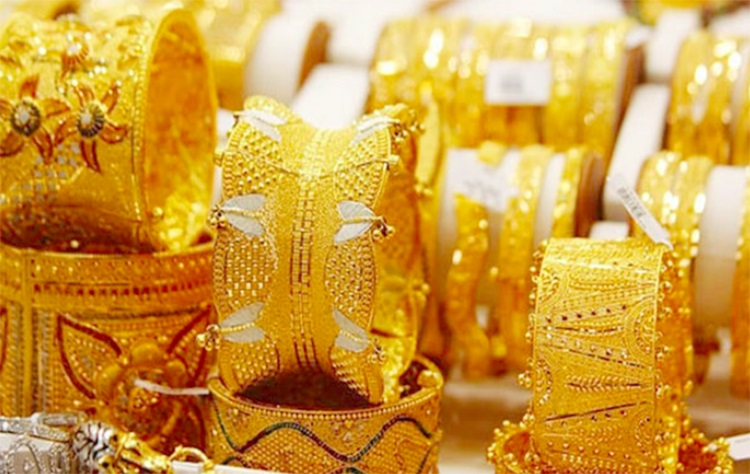

Thời điểm 8h30 theo giờ Việt Nam, giá vàng thế giới đứng ở mức 1.900 USD/ounce, tăng 1 USD/ounce so với chốt phiên tuần qua. Quy đổi theo tỉ giá hiện tại của Ngân hàng Vietcombank (HM:VCB), vàng thế giới tương đương 53,3 triệu đồng/lượng (chưa bao gồm thuế, phí). Như vậy, tính theo giá chốt phiên tuần qua, giá vàng trong nước hiện đang cao hơn thế giới hơn 3 triệu đồng/lượng. Các chuyên gia khuyến cáo, chênh lệch giá vàng trong nước và thế giới khá cao, giới đầu tư vàng cần thận trọng. Trên thị trường nhà đầu tư nhỏ lẻ, dữ liệu của Kitco.com cho thấy tâm lý của các nhà đầu tư vẫn lạc quan. Tuy nhiên, sự quan tâm đến vàng đã giảm mạnh khi giá kim loại quý tiếp tục mắc kẹt quanh mức 1.900 USD/ounce. Trong dài hạn, các nhà đầu tư cho rằng, giá vàng sẽ bật lên khỏi ngưỡng 1.900 USD/ounce, do những lo ngại về dịch bệnh Covid-19, cũng như việc tăng cường các biện pháp kích thích kinh tế - điều kiện thuận lợi cho sự phục hồi của giá kim loại này. Thị trường hiện đang đổ dồn sự chú ý vào cuộc bầu cử Tổng thống Mỹ, quốc gia có nền kinh tế lớn nhất thế giới. Bất cứ thông tin mới nào về cuộc bầu cử được tung ra đều có thể ảnh hưởng trực tiếp tới giá vàng.
Tại thị trường trong nước, sáng nay, Công ty Vàng bạc đá quý Sài Gòn niêm yết giá vàng SJC mua vào bán ra ở mức 55,75-56,27 triệu đồng/lượng, giảm 70.000 đồng/lượng chiều mua vào và 20.000 đồng/lượng chiều bán ra so với chốt phiên tuần qua. Vàng Doji niêm yết giá vàng ở mức 55,8-56,2 triệu đồng/lượng, giảm 50.000 đồng/lượng chiều mua vào so với chốt phiên gần nhất. Phú Quý SJC niêm yết giá vàng ở mức 55,85-56,2 triệu đồng/lượng.